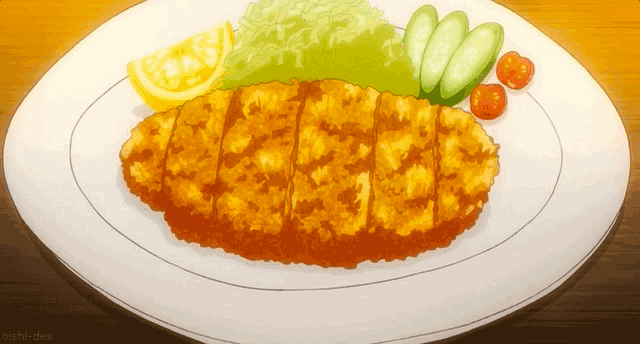

Chicken Cutlet with Salad

Description
Boiling the potatoes for longer, then smashing them, makes for more surface area, meaning golden brown beauties and extra crispy bits everyone will love!
Ingredients
For the Rice:
- 300g sushi rice
- 100ml rice wine vinegar
- 2 tablespoon golden caster sugar
For the Japanese mayonnaise:
- 3 tablespoon mayonnaise
- 1 tablespoon rice wine vinegar
- 1 tablespoon soy sauce
For the Sushi:
- 25g bag nori (seaweed) sheets
- choose from the following fillings: cucumber strips, smoked salmon, white crabmeat, canned tuna, red pepper, avocado, spring onion
To serve with all styles of sushi:
- Wasabi (optional)
- pickled ginger
- soy sauce
Instructions
-
Heat oven to 200C/180Cfan/gas 6. Put the potatoes in a large pan filled with cold salted water. Bring to the boil and cook for 15 mins until a cutlery knife can be inserted into the centre of a potato with only a little resistance, then drain and steam-dry.
-
Arrange the potatoes in a large roasting tin, leaving enough space between each one so that they have room to spread once smashed. Using a fish slice, push down on each of the potatoes to break them up slightly. Don’t worry if some break up completely, it just means more crispy bits. Season well and drizzle over the oil. Roast for 1 hr, turning once, until golden and crispy.